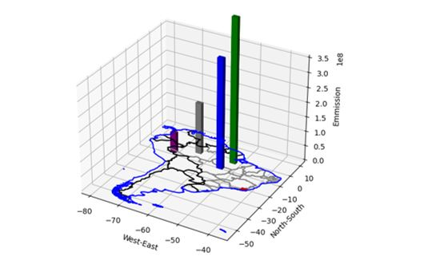
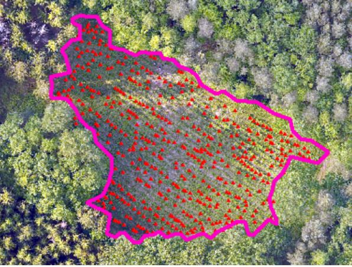
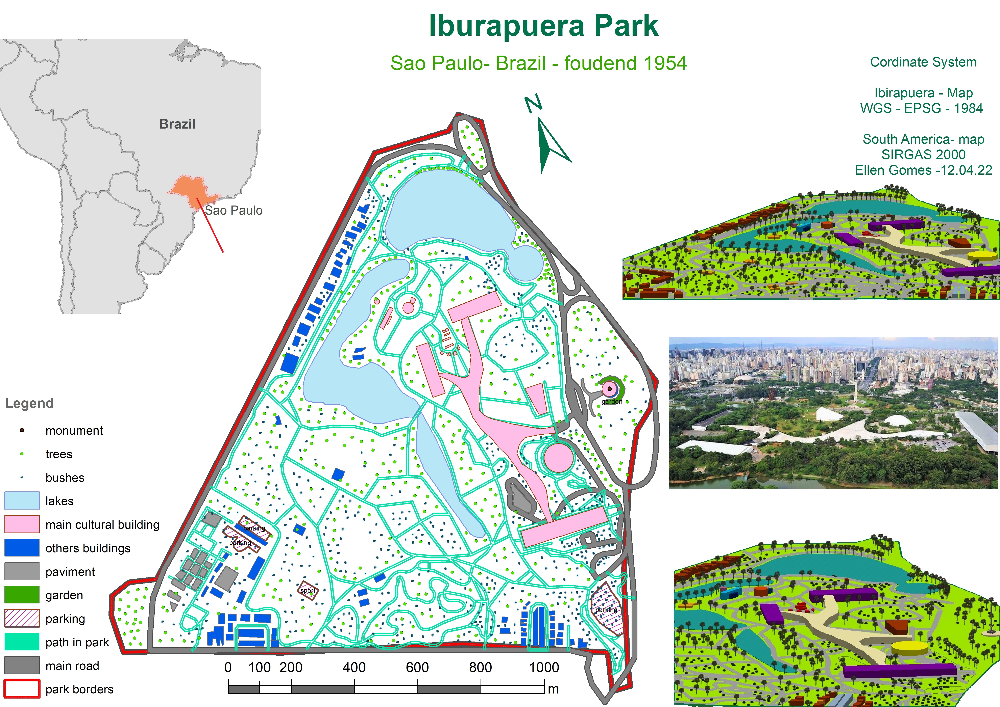
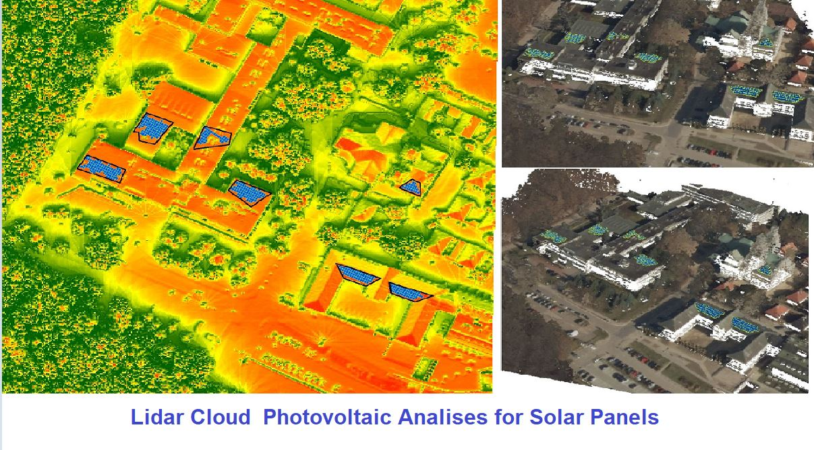
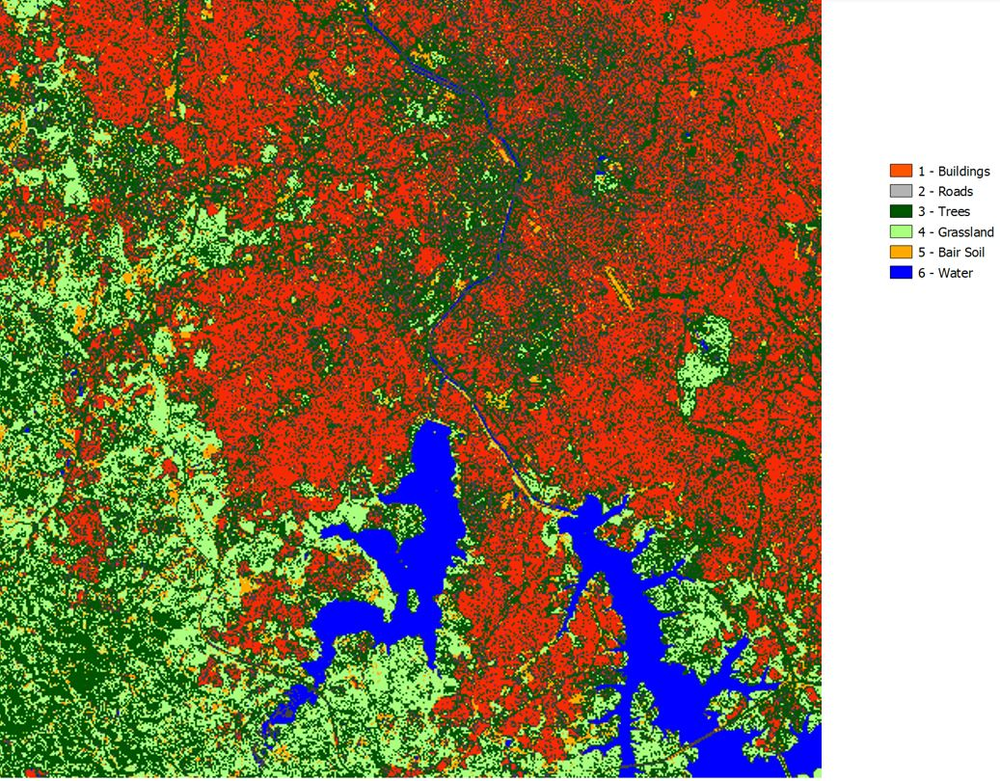
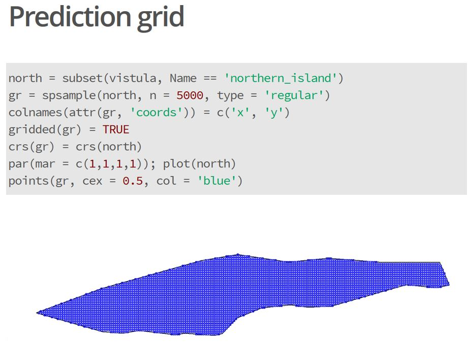
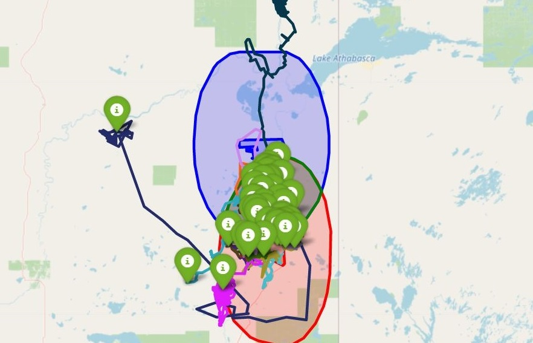
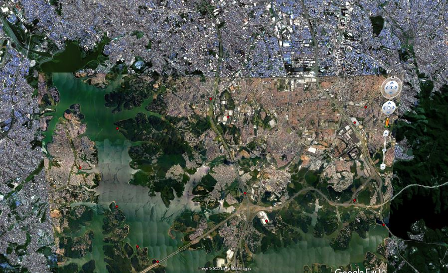
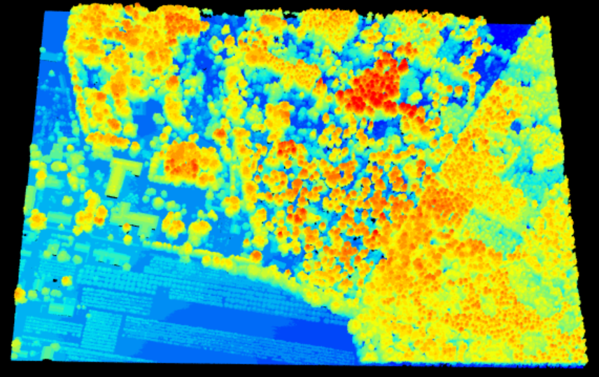

Ellen Gomes
B.Sc. International Forest Ecosystem Management
M.Sc. Forest Information Technology

B.Sc. International Forest Ecosystem Management
M.Sc. Forest Information Technology
Understanding how different ecosystems interact and translating this information from raw data to geospatial visualization is fascinating. The importance of environmental analyses for current and future research in nature conservation is my motivation. To reach a project's goals I use tools such as ArcGIS, QGIS, Python, R, Jupyter Notebook and more. Here are some project outcomes (click an image to see it in full size):

How much CO₂ did forest fires release in Brazil in 2018, and where? This map shows the emissions in the northern region, revealing where fires had the biggest climate impact.

Photogrammetry from DJI Phantom 4 drone images of a forest regeneration area. The result supports counting the newly planted nursery trees.

Where exactly is the park located? This map combines coordinates, scale and 3D views with an overview image. Ideal for tourist maps and posters.

Drone photogrammetry and NDVI analysis of a university campus, comparing green areas with non-vegetated surfaces. The goal is to identify cooling areas and heat zones across the campus.

Using a LiDAR point cloud, sun exposure was simulated over 24 hours. The roofs that receive the most hours of light are the best candidates for installing solar panels.

How do you find out what is around an area? By building an analysis mask from exactly the information you want to know, the result shows only what matters.

How can the elevation or terrain of an area change? A prediction grid in R helps to understand and visualize how the area changes.

How do wolves move around a nature reserve? GPS tracks carried by some of the animals show where they spend most of their time. The nature reserve is shown in red and the city in blue.

How do different images come together? Same projection? Different days or years? An example of image compositing and mosaicking in Google Earth Engine.

A LiDAR point cloud visualized in R to measure the distance between trees and nearby buildings in the city, supporting safety assessments of tree condition.
Or write directly: ellengomes@posteo.de
{kind=link}
{kind=link}
{kind=link}
{kind=link}
{kind=link}
{kind=link}
{kind=link}
{kind=link}
{kind=link}